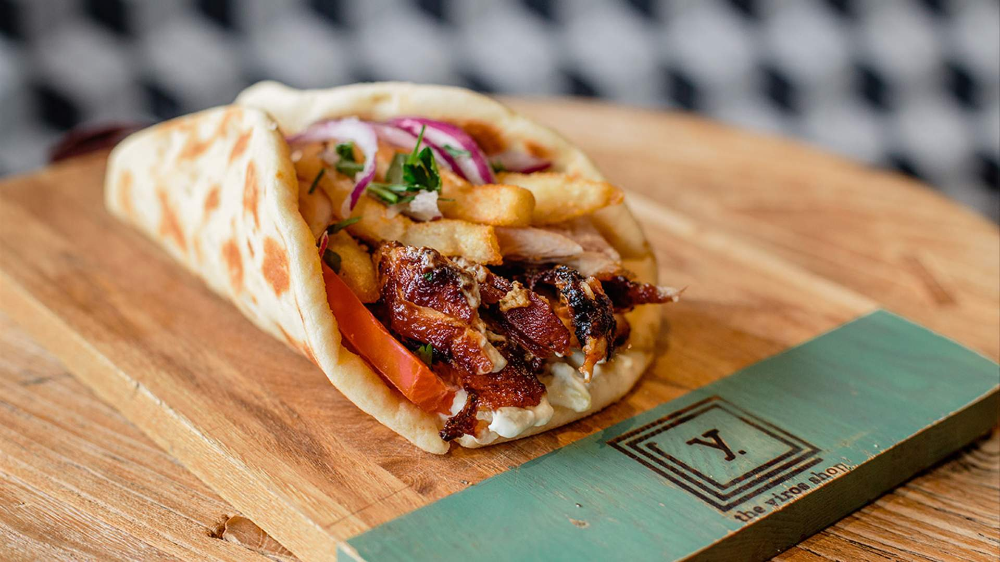

Yiros Recipe

Description
This is a really tasty yiros recipe that i think you will love.
Ingredients
- 60g / 4 tbsp butter
- 1/2 cup (75g) flour
- 4 cups (1 litre) milk (I use low fat)
- 2 cups (200g) shredded cheese (Colby, Gruyere, Cheddar, Monterey Jack, OR 1 cup shredded parmesan)
- Pinch of freshly ground nutmeg
- Salt and pepper
Steps
- Heat oil in a large heavy based pot over medium heat. Add garlic, onion, celery and carrots. Cook for 10 minutes until softened and sweet – they should not brown (if they do, turn heat down).
- Add beef, turn heat up and cook the beef, breaking it up as you go.
- Once the beef has all turned brown, add the remaining Ragu ingredients EXCEPT the sugar.
- Stir then adjust the heat so it is bubbling very gently. Place the lid on and cook for 1.5 – 2 hours, stirring every now and then, then remove the lid and simmer for 30 minutes.
- The ragu is ready when the meat is really tender and the sauce has thickened and is rich – see video for consistency (Note 6). Adjust salt and pepper to taste, and add sugar if required (Note 3)